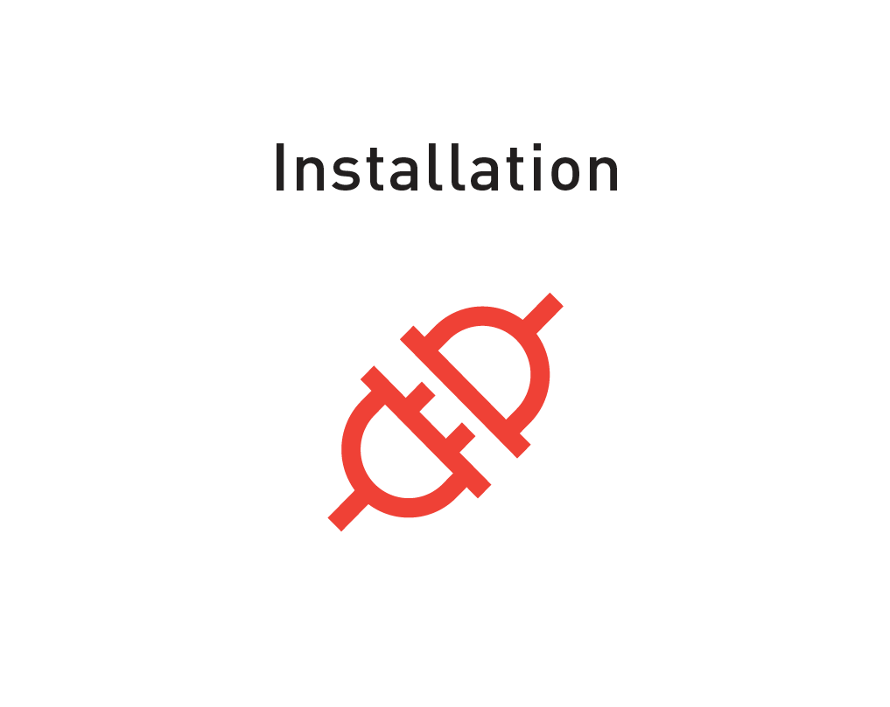
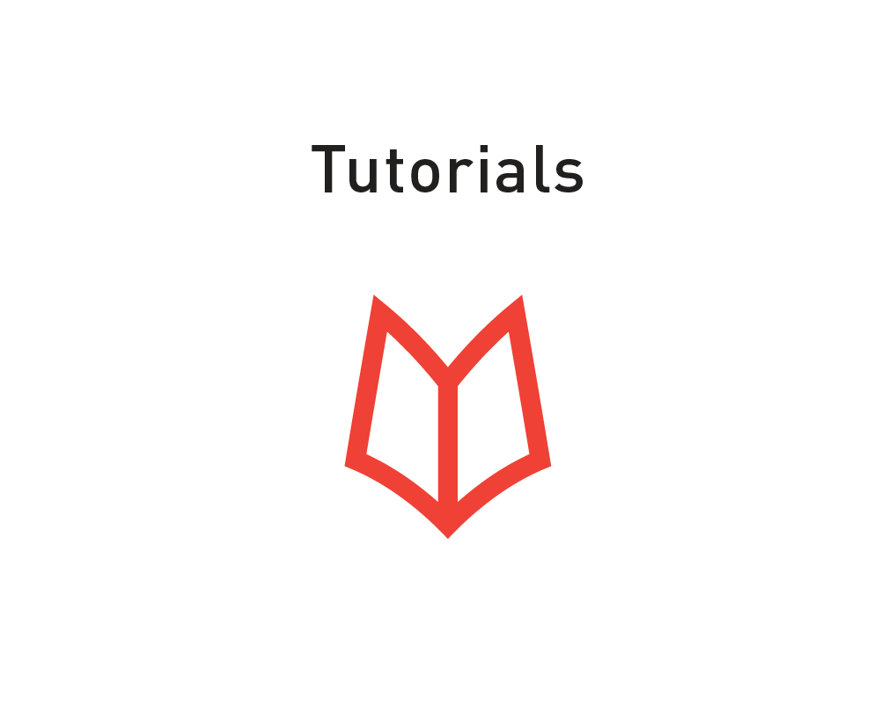
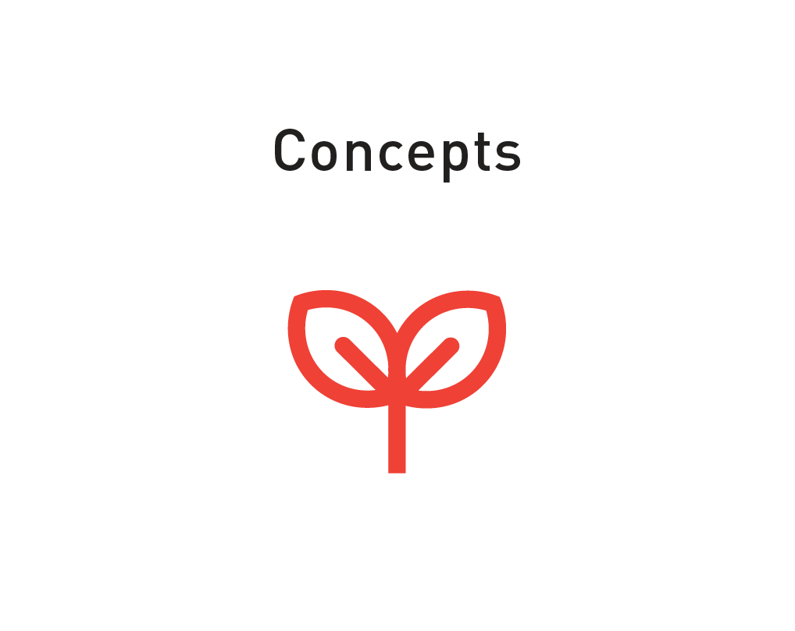
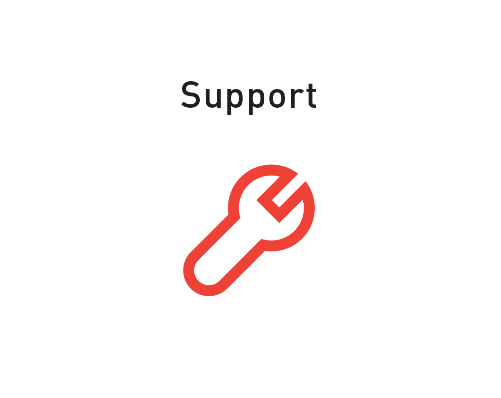
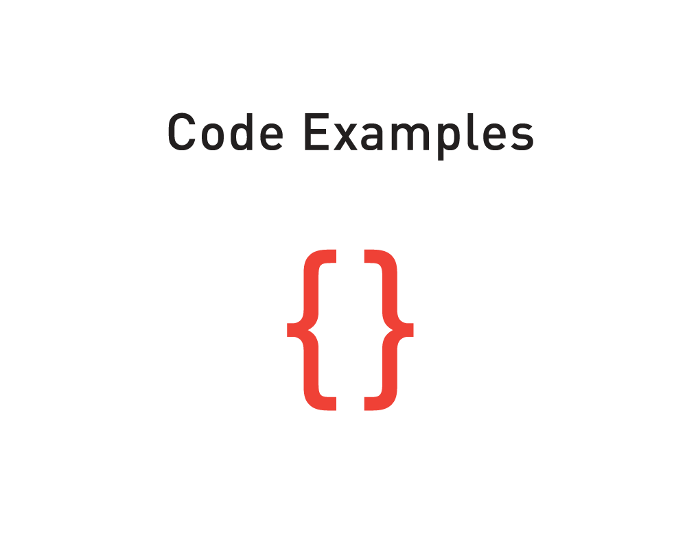

Create account
Log in
Search
Search
More
View source
History
Main page
Main Page
Installation & Configuration
Robot Setup
Workstation Setup
Networking
Hello Robot!
Hardware Components
SDK Workstation Requirements
Robot Workspace Guidelines
Field Service Menu (FSM)
Time and NTP
SDK Software Update
SDK Release Notes
Concepts
SDK Robot-Workstation Overview
E-STOP and Enable Robot
Arm Calibration
Arm Control Systems
API Reference
Tutorials
Interaction Control Tutorial
Motion Interface Tutorial
MoveIt! Tutorial
Gazebo Tutorial
Code Examples
Running Examples Overview
Camera Image Display Example
Gripper Example
Gripper Cuff Control Example
Head Display Image Example
Head Movement Example
Lights Blinking Example
IK Service Example
Joint Position Example
Joint Position Waypoint Example
Joint Torque Springs Example
Joint Trajectory Playback Example
Set Interaction Options Example
Motion Interface Go-To-Joint Angles
Support
User Forum
Tools
All Pages
Print
Upload File
What Links Here?
Jump to:
navigation
,
search
Sawyer SDK Wiki




